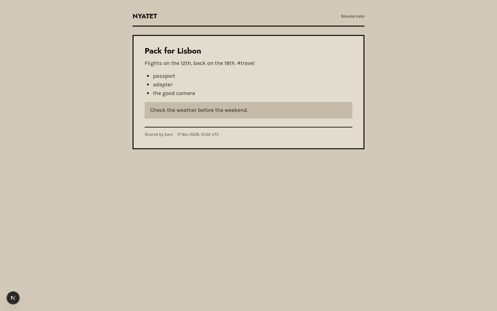

01 · notes
Write in markdown, tag with #tags
Every note is markdown: headings, lists, quotes, code and tables all render. A tag is a word you typed with a # in front. Nothing is stored separately, so the tag list is always exactly the tags in your notes.
- Pin the notes you come back to, and they stay at the top.
- Edit in place, at the same size you read at.
- Delete a note and its share links go with it.
02 · search
Find it again
The timeline searches the note text as you type, and the tag row filters to one tag at a time. The tags are the ones your notes already use, sorted, so the filter never invents a tag you do not have.
04 · the public page
A reader needs no account
A share link opens a read-only page: the note, who shared it, and the date. No app navigation, no sign in. Expired and revoked links return not found, and the page asks search engines not to index it.

05 · accounts
Email and a password
Sign up with a name, an email and a password of at least eight characters. The session is a JWT in an httpOnly cookie, and passwords are hashed with scrypt and a random salt. There is no password reset and no email verification yet.
06 · install
Run it locally
You need Node.js 20 or newer and Docker.
- Copy the environment file
cp .env.example .env.local -
Generate a session secret and put it in
AUTH_SECRETopenssl rand -base64 32 - Start Postgres
docker compose up -d - Install dependencies
npm install - Create the tables
npm run db:push - Start the app
npm run dev
The env file has two values: DATABASE_URL, which already points at the Docker database, and AUTH_SECRET, which you generate above. Open http://localhost:3000, create an account, and write a note.
07 · scripts
What each command does
| Command | What it does |
|---|---|
npm run dev | Start the dev server. |
npm run build | Production build. |
npm run start | Serve the production build. |
npm run lint | ESLint. |
npm run typecheck | TypeScript, no emit. |
npm run test | Unit tests against the local database. |
npm run test:e2e | Browser tests. |
npm run db:push | Apply the schema to the database in the env file. |
npm run db:generate | Generate SQL migrations. |
npm run db:studio | Open Drizzle Studio. |
08 · deploy
Vercel and Neon, on the free tier
- Create a Neon project and copy the pooled connection string.
- Push the repository to GitHub and import it in Vercel.
- Add
DATABASE_URLandAUTH_SECRETin Vercel. - Create the tables once from your machine, with the Neon connection string.
DATABASE_URL="postgres://...neon.tech/neondb?sslmode=require" \ node ./node_modules/drizzle-kit/bin.cjs push - Deploy.
Neon's free tier suspends an idle database, so the first request after a pause is slower.
09 · data model
Three tables
- users
- id, email, name, password hash
- notes
- id, user id, markdown content, pinned, timestamps
- note_shares
- id, note id, random token, readable slug, name, expiry
Tags are derived from the note text at read time, not stored.
10 · security
What it does and does not protect
- Passwords are hashed with scrypt and a random salt.
- The session cookie is httpOnly, SameSite=Lax, and Secure in production.
- Share tokens are 24 random bytes, read-only, revocable, and can expire.
- A slug is not a secret. It is a readable alias, guessable by nature; the random token stays the private form.
- Markdown is sanitized before rendering.
- No rate limiting on the auth endpoints yet.
11 · scope
Not in this MVP
Password reset, email verification, attachments, comments, reactions, spaces, a public explore timeline, and note history. The app is deliberately small: notes, tags, search and share links.